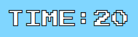
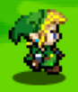
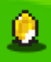
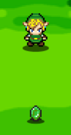
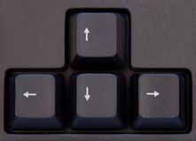
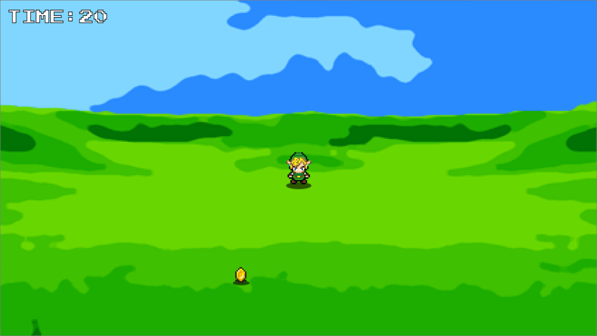
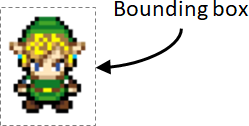
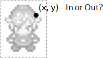
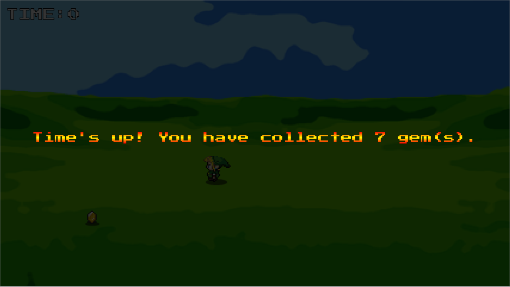
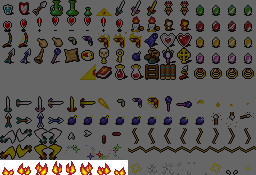

In this lab, you will make a 'collecting as many gems as you can' game using the sprite
that we have shown during the lecture as the main character of the game
Here is a video showing an example of the game:
As you can see, the game works like this:
The game lasts for only 20 seconds (shown at the top-left hand corner of the game)

The player needs to walk/run around to collect as many gems as possible

At any one time, there is only one gem in the game

The gem randomly changes its colour and location after some time
When the time is up, the game is over
This lab involves these skills:
HTML canvas programming
Working with modules written using the module pattern
This is one of the animation sequences (idleDown) stored in the Player module
Based on the content of the sequence, you can replace the code inside the function,
from drawing a red rectangle to drawing an appropriate sprite
To do that, you can refer to the
lecture notes
for the code that you need to write here
Obviously, you need to change all the variables appropriately to what you have currently inside the Sprite module
For example, the sprite index is stored in a separate variable called index inside the module
(In the notes, index is a property inside the sequence object)
If you do changes correctly, you will see the player and the gem shown in the game appropriately, like this:

However, only the first sprite in their corresponding animation sequence is shown, i.e. they are not animated at all
2.2. Moving to the Next Sprite
The player and the gem are not animated after the previous step
This is because the sprite index has not been updated anywhere in the code
If you read the Sprite module code or its
documentation, you will find that the index should be updated here:
const update = function(time) {
if (lastUpdate == 0) lastUpdate = time;
/* Add your code here */
return this;
};
Again, you can refer to the lecture notes
here
and
here
for the code that you need to use in this place
You need to change the variables when needed, e.g. using the index variable inside the Sprite module
The sequence object also has an additional property called loop, i.e.:
{ ..., loop: false }
This property tells you whether you need to repeat the animation sequence when you reach the end of the animation
If the value is true, you will repeat the animation;
this is similar to what has been done in the notes
If the value is false, you will need to make sure that
the animation stops at the last sprite in the sequence
At the start of the game, the Player module uses a sequence that has loop set to false, i.e.:
That means if you write the code correctly, the player's animation will stop at the last sprite (sleeping) and
the gem will repeat its animation continously, as shown below:
3. Moving the Player and the Gem
After finishing the previous part, the player and the gem have animations but they are not moving at all
In this part, you will add the code to make them move
You do not need to change the Player module and
the Gem module but you will use a lot of their functions
In the game, you use the arrow keys to move the player around

In a web page, you can use the key event handlers to do things with them
In the main code, two key event handlers have already been set up for you inside the document ready event:
$(document).on("keydown", function(event) {
/* Add your code here */
});
$(document).on("keyup", function(event) {
/* Add your code here */
});
The keydown event is triggered when you press down a key and
the keyup event is triggered when you release the key
The event parameter tells you which key is involved in the event using the keyCode property, i.e. event.keyCode
In our game, we use the arrow keys which have the following key codes:
Left arrow key - 37
Up arrow key - 38
Right arrow key - 39
Down arrow key - 40
Adding Code to the Event Handlers
The Player module gives you two functions to move and stop the player:
player.move(dir) asks the player to start moving towards a direction
dir can be 1 (Left), 2 (Up), 3 (Right) or 4 (Down)
player.stop(dir) asks the player to stop moving
dir can be 1 (Left), 2 (Up), 3 (Right) or 4 (Down)
This direction is the direction the player is heading towards before he stops
You need to use the above functions appropriately in the event handlers, i.e.:
Use the correct function and direction, based on the key codes
After finishing the code, you should be able to move the player freely around the game area, as shown by the following video:
3.2. Moving the Gem at the Start of the Game
In this part, you will 'randomize' the gem so that it gets a new colour and a new location randomly
The Gem module provides a useful function for you to do that
The code of the function is shown below:
const randomize = function(area) {
/* Randomize the color */
const colors = ["green", "red", "yellow", "purple"];
setColor(colors[Math.floor(Math.random() * 4)]);
/* Randomize the position */
const {x, y} = area.randomPoint();
sprite.setXY(x, y);
};
In the randomize() function,
It first assign a random colour, out of four available colours, to the gem
Then, it gives a random position to the sprite representing the gem
This random position is obtained from the area given to the function
This parameter represents the game area, which should be
a variable created from the BoundingBox module
In the main code, you can use the variable gameArea for this purpose
Using the function, you can then randomly move the gem away at the start of the game
You should do this before the game starts, i.e. when you click on the starting screen of the game
An example of the result is shown below:

The gem is randomly placed and has a yellow colour at the start
3.3. Moving the 'Old' Gem
Even after moving the gem at the start of the game, it still stays in that place forever
To make the game more interesting, you can move the gem in a fixed interval
The gem has an 'age' value that you can get from the Gem module
You use the getAge() function to get the current age of the gem, expressed in milliseconds
This age value is reset every time the gem is randomized
For example, if you run getAge() one second after the gem is randomized, you will get 1000 (milliseconds) as a return value
In the main code, a variable called gemMaxAge has been created, which indicates the maximum age of a gem
When the gem reaches this age, you need to randomize it
As gemMaxAge has been initialized with 3000, it means the gem is randomized every 3 seconds
You need to write the code in the doFrame() function
It does not matter where you are going to put the code in the function but let's put the code before drawing the sprites, i.e.:
function doFrame(now) {
...
/* Add your code here */
/* Clear the screen */
context.clearRect(0, 0, cv.width, cv.height);
...
}
After adding the code, the gem is randomly moved every 3 seconds, like in this video:
4. Collecting the Gem
You have now finished the movement of the player and the gem
In this part, you will complete the major part of the game, collecting the gems
You need to write the code to check whether the gem is very close to the player, so that the player can collect it
Similar to before, all the necessary functions have been given to you so you just need to use them correctly
Here are the functions that are most useful in this part:
getBoundingBox() - You can get the bounding box of the player by using the player's getBoundingBox() function
(documentation)

isPointInBox() - From the returned bounding box, you can use the isPointInBox() function
to determine if (x, y) is within the bounding box or not
(documentation)

getXY() - You can get the position of the gem using its getXY() function
so that you can test it against the player's bounding box
(documentation)
Using the above functions, you can easily test if the player can collect the gem (the gem's centre is inside the player's bounding box)
This code can be added to the doFrame() function
For example, you can add the code before drawing the sprites
If a player is close to a gem, i.e. the player can collect the gem, you should:
Increase the number of collected gems by one using the collectedGems variable given to you in the main code
Randomize the gem to move it away and reset its age
5. Handling the Game Over Situation
The game never ends now as the count down timer can go negative without stopping
You should stop the game when the timer is 0
You can add the code after the timer is updated in the doFrame() function, i.e.:
function doFrame(now) {
if (gameStartTime == 0) gameStartTime = now;
/* Update the time remaining */
const gameTimeSoFar = now - gameStartTime;
const timeRemaining = Math.ceil((totalGameTime * 1000 - gameTimeSoFar) / 1000);
$("#time-remaining").text(timeRemaining);
/* Add your code here */
...
}
When the value of timeRemaining is 0, you should:
Show the game over screen
Remember to put the number of gems collected in the 'game over' text here:
<tspan id="final-gems">0</tspan>
Stop the animation loop by stopping the doFrame() function, i.e. using return
without running requestAnimationFrame() again
After adding the code, when the time is up, the game over screen will be shown like this:

And the player and the gem cannot move anymore
6. More Improvements
At this stage, the game is complete
However, it is always possible to add improvements to it
You will add three improvements here:
Adding sounds and music
Adding some decorative fires
Adding a cheat key
6.1. Adding Some Sounds to the Game
The main code has already helped you load some sound files, as shown in the code:
const sounds = {
background: new Audio("background.mp3"),
collect: new Audio("collect.mp3"),
gameover: new Audio("gameover.mp3")
};
sounds.background is the background music of the game
You should play it when the game starts
sounds.collect is the sound effect when the player collects a gem
You should play it when the player collects a gem
You need to make sure the sound is played from the beginning
This is because the player may be able to collect another gem before the previous sound effect has finished playing
sounds.gameover is the music to play when the time is up
You should play it when the game is over
When doing this, you need to stop the other two sounds; otherwise, you may have all of them playing at the same time
6.2. Adding Some Fires to the Game
You can add some decorations to the game
For example, you can add some fires or bombs to the corners of the game area
You can get the corners of the game area using the getPoints() function of gameArea
Or, simply by hardcoding the locations when you create the fires
You can find the fire sprites in the objects' sprite sheet, at the bottom row:

To add the fires, you need to add a new module from scratch, e.g. a Fire module in fire.js
It would be a module that is similar to Gem and Player
However, since the Fire module is for decoration only,
you do not need all the extra functionalities that you find from Gem and Player
After finishing the module, you can use the module to make a few instances of the fire, for example: